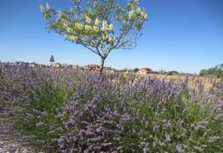
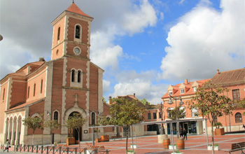
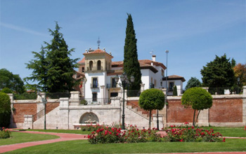
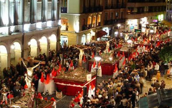

Si deseas hacernos cualquier consulta, no dudes en ponerte en contacto, estaremos encantados de atenderte. Leer más...

En Comforsuite tenemos para ofrecerte las mejores ofertas y promociones para ti, compruébalo. Leer más...

Si te gusta el juego, en lo que fuera el Palacio de los Condes de Gamazo, uno de los lugares más emblemáticos del municipio a escasos minutos a pie de nuestros Apartamentos
Si prefieres las verbenas, espectaculares encierros y las clásicas novilladas , quédate y disfruta de las fiestas de la Virgen de la Salve el 8 de septiembre o de San Cristóbal el 10 de julio. Una recreación histórica con motivo de la fiesta de la vendimia ‘ Batalla del Duque de Wellington”
Dentro de la “Ruta del Caballero” (una de las múltiples que podrán realizar durante tu estancia en la provincia), “entre páramos y bosques de encinas, monasterios y fortalezas, vestigio de un pasado en el que se luchaba a ras de suelo mirando a lo alto” Boecillo nos ofrece un paseo por su historia a través del arte neo-mudéjar. Muestra de ellos son las construcciones en ladrillo rojo localizadas en su paisaje urbano, como es el caso del ayuntamiento y el antiguo Círculo Católico.
Y porque además de historia y pasado es presente, aunando a la perfección tradición y tecnología, en Boecillo encontrarás unos de los más importantes Parques Tecnológicos del Norte de España, el Parque Tecnológico de Boecillo, con numerosas y punteras empresas de I+D+I. No dejes de visitarlo.

Por si decides conocer mundo… Las posibilidades se multiplican por mil. A muy poco de nuestros apartamentos… castillos, enoturismo, museos, reviviendo la vida romana…
No te pierdas las ocho rutas turísticas especialmente diseñadas para que puedas descubrir la provincia “Ruta de Los Castillos”, porque has de saber que el mayor número de castillos de España se encuentra en Valladolid, no en vano es uno de los principales reclamos turísticos de la provincia, donde poder transportarte en el tiempo a épocas de encarnizadas contiendas, la “Ruta del Valle de Esgueva”, la “Ruta de Tierra de Campos”, “Ruta de las tierras de Medina”,… o sus magníficos museos, Museo del pan en Mayorga, el Museo Provincial del Vino, en Peñafiel, el Museo de las Villas Romanas, el parque infantil tematizado y la Casa Romana, en Almenara de Adaja, que nos permitirán adentrarnos en la vida romana del siglo IV, el Centro de Interpretación del medievo, Centro de Interpretación Huellas de la Pasión, en Medina del Campo, para conocer la Semana Santa, declarada de interés Turístico Internacional, el Parque temático del Mudéjar y el Palacio del Caballero en Olmedo,…mil opciones para empaparte de historia a través de multitud de visitas guiadas, talleres y experiencias lúdicas, sensoriales y emocionales.

Y si vienes con niños, en el Valle de Esgueva, zona de riqueza medioambiental, El Valle de los Seis Sentidos es visita obligada. Magnífico parque infantil que dispone de más de 18.000 m2 en los que los niños pueden disfrutar de 60 juegos diferentes. con vocación clara de ser el más ambicioso y completo de Europa, tanto por el número y la diversidad de los elementos proyectados (60 juegos) como por el gran número de usuarios que permite que pueda haber hasta 400 niños jugando a la vez.
Referente enoturístico y gastronómico internacional, no olvides las famosas Rutas de Enoturismo de Valladolid, alrededor de sus cinco Denominaciones de Origen: Duero, Rueda, Cigales, Tierras de León, Toro…un paseo entre viñedos, bodegas (Matarromera, Protos, Mocén, Centros de Interpretación, restaurantes y Concursos de Pinchos y tapas de Valladolid, Medina del Campo o Pedrajas de San Esteban, que te permitirán disfrutar de experiencias gastronómicas de alto nivel.
Valladolid, ciudad de personajes históricos, arte y riqueza patrimonial en cada uno de sus rincones, lugar de rica y variada gastronomía, de buen vino, amplias extensiones verdes, pinares y gran riqueza vegetal y ornitológica, se encuentra a pocos minutos de Boecillo.
De pinchos y tapas, de museos, de vinos, de fiesta, de playa, sí de playa en las Riberas del Río Pisuerga, o simplemente de paseo….Valladolid no te dejará indiferente.
De pinchos y patas. Variados y originales, sofisticados y tradicionales, pruébalos todo en los bares y restaurantes de sus múltiples zonas de ocio: Zona de la Catedral, Zona de San Miguel, Zona San Martín y Paraíso, Zona La Antigua.
De museos. Empápate de cultura, tienes mucho por visitar: Museo de la Ciencia, Museo de Valladolid, Museo de Arte Contemporáneo, MUVA Colección de Ciencias Naturales, Museo Nacional de Escultura, Casa Museo de Colón, Casa Museo de Zorrilla, Casa Museo de Cervantes,…
De vinos. En Valladolid te encontrarás grandes extensiones de viñedos donde crecen alguno de los mejores vinos del mundo. Porque Valladolid cuenta con cinco denominaciones de origen vitinícolas (El blanco de Rueda, el rosado de Cigales y el tinto de Ribera del Duero, Tierras de León o Toro), es el lugar perfecto para los amantes de la cultura del vino, no en vano es uno de los principales destinos enoturísticos de España.

De fiesta. A Lo largo del año podrás disfrutar de multitud d fiestas como los carnavales, la feria de dia, Fiestas de la Virgen de San Lorenzo, San Juan, San Pedro Regalado, con actuaciones por calles y plazas, sesiones de fuegos artificiales, verbenas, trofeos deportivos y un sinfín de actividades para todas las edades y gustos.
Semana Santa, la Concentración motorista PINGUINOS (la concentración invernal más importante de Europa, fue reconocida por la Junta de Castilla y León como Fiesta de Interés Turístico Regional), Seminci (Semana Internacional de Cine), Encuentro Internacional de Escultores de arena, Macroconcierto Valladolid latino, Festival Internacional teatro y artes de calle,…para que vengas cuando vengas tengas algo que hacer.
De paseo. Pasea, piérdete por sus calles, descubre el Valladolid antiguo, el más auténtico, sus plazas, sus jardines, iglesias y conventos, su catedral, su Plaza Mayor y su ayuntamiento, sus palacios, la Academia de Caballería, su plaza de toros, arcos y puerta el Arco de Ladrillo…. Y porqué no una visita guiada o un recorrido en el bus turístico?.
Si decides disfrutar de alguno de sus magníficos recorridos monumentales, encontrarás muestras de todos los estilos: desde el Románico y Gótico, Renacimiento, Barroco, hasta los movimientos arquitectónicos contemporáneos de los siglos XIX Y XX.
Te agotarás antes de verlo todo, porque Valladolid es fuente inagotable de entretenimiento, pura cultura, toda historia, Castilla- León en su máximo exponente.
Mil razones para venir a Boecillo. Ven,…. descubrirás Valladolid y mucho más.
Sin moverte de Boecillo…bodegas, arte neo-mudéjar, encierros, ocio, juego y …tecnología.
Al sur del río Duero, rodeado de pinares, sometido a un feudo en la época medieval, en Boecillo, aquí mismo tienes a tu alcance múltiples opciones de ocio. No dejes de visitar sus bodegas, originarias de los siglos XIII y XIV, testimonio de la gran actividad que en torno a la vid reinó en el pueblo, muchas de ellas modernizadas para convertirse en afamados restaurantes, donde podrás disfrutar de lo mejor de la gastronomía castellana.

Mil motivos para escoger ComforSuite, mil razones para venir a Boecillo. Descubrirás Valladolid y mucho más. Leer más...

Porque queremos que durante tu estancia disfrutes toda la esencia castellana con nuestras experiencias. Leer más…

Premiamos tu fidelidad, por eso queremos que formes parte de nuestro Club Comforsuite. Leer más...